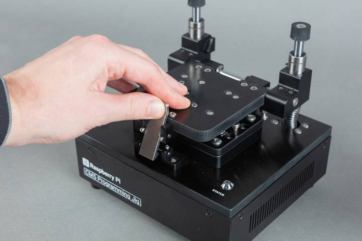
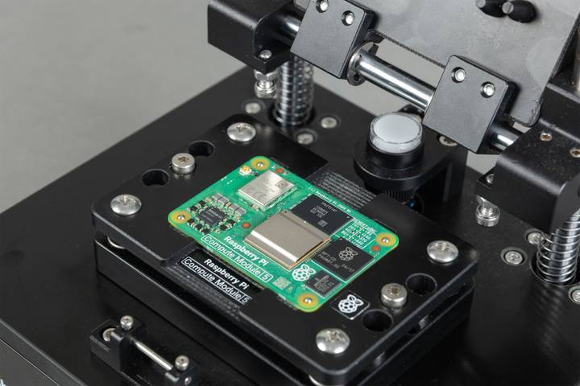

Use the Compute Module 5 Programming Jig to provision a Compute Module 5 (CM5) with an operating system image.
Before you begin, ensure that the jig is:
Press the top of the latch backwards to release the clamping mechanism, allow the lid to slide up, and then pivot the lid back until it stops.

Place the Compute Module 5 into the module bay with the

Ensure that the through-hole studs pass through all four corner holes on the CM5 before closing the lid. Incorrect alignment can result in a failed provisioning attempt or damage to the pogo pins.
After the CM5 is clamped in place, the jig begins provisioning automatically. If provisioning doesn't start automatically, see
Typical provisioning time is approximately 1.5 minutes for each CM5 with a 2.6GB OS image installed using the naked provisioning style. Actual time varies depending on OS image size, storage type, level of security, and network speed.
Don't remove the CM5 from the jig while provisioning is in progress. Don't press the unmarked button on the jig. Either of these actions can render the CM5 unusable.
Monitor the STATUS LED on the jig to track progress through the provisioning phases:
| Status LED | Phase | Description |
|---|---|---|
| Flashing blue | Provisioning | The jig detects the CM5 and loads a temporary Linux environment. In secure-boot mode, the signing key hash is programmed into the device OTP memory (this is a permanent operation). The jig selects the appropriate provisioning service based on the level of security you chose in |
| Green | Success | Provisioning is complete. The CM5 can be removed. |
| Flashing red | Provisioning failed | The provisioning process failed. For more information, see troubleshooting. |
For more detailed progress information, you can also use the Secure Boot Provisioner web interface. Access Related information as described in
When the STATUS LED turns green, provisioning is complete. You can remove the CM5.
The CM5 is now ready for deployment.
Related topic: